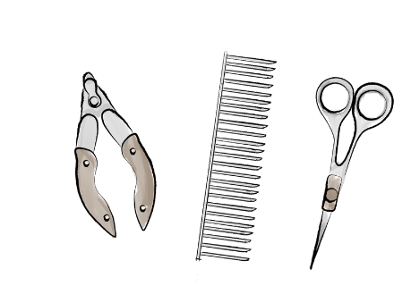

Pet Cremation & Farewell Journey in Hong Kong | RESOUL
Our process
Every step, gentle.

Follow the little paw prints, step by step, and walk this last stretch with them.
-
1
24-hour service
Call us, and a driver will arrive within two hours.
-
2
Basic cleaning & sanitising
Then kept individually in a chilled chamber.
-
3
Booking the farewell ceremony & cremation
-
4
Bathing & gentle muscle relaxation
-
5
Sea-view farewell & private cremation
-
6
Fur & ashes keepsake options
-
7
Ashes arrangement (choose one)
Kept with us
Collect or delivered in an urn
Returned to nature
Farewell journey
Finish the words
left unsaid, slowly.
A farewell shaped by your love and your story.
When every farewell deserves to be cherished, this is more than a cremation — it is a final tribute to your companion's life. From private pick-up, gentle grooming, a farewell ceremony and individual cremation, to ashes and memorial arrangements, every step is followed by a dedicated person, so you can say goodbye clearly, quietly and without being rushed.
Losing your beloved pet is one of the deepest heartbreaks we can face. They were never just a companion — they were family. Allow yourself to grieve slowly, and lean on those who understand when you need to.
At RESOUL we have supported over 100 families through this journey. With professional, attentive care we safeguard every step filled with love and memory; our team, with years of veterinary-nursing and pet-cremation experience, is here only to turn grief, gently, into cherished memories.

 270° sea-view ceremony room
270° sea-view ceremony room
Guaranteed seaview memorial room
In the heart of Hong Kong, Resoul offers a guaranteed seaview memorial room — a serene, private space where the vast ocean and golden sunsets become a gentle backdrop for your farewell.
As the sun dips behind the islands, painting the sky in warm hues, gather with loved ones to honor your pet's journey. Soft light fills the room, the sea whispers peace, and every moment feels wrapped in tranquility. Here, goodbye becomes a beautiful transition: from journey to farewell, forever held in precious memories.
Your greatest love deserves this view, this calm, this forever.
FAQ
About the farewell journey,
things you may want to know.
In a quiet spot at home, arrange a comfortable box for your pet with a towel they loved. After about two hours the body stiffens; you can gently position them and cover them. Control the room temperature (air-con in summer), place ice packs near the head and belly, and add toys, food and photos. Then call the Resoul 24-hour line 6476 2951 as soon as possible; staff arrive within two hours to bring your pet in for grooming. You may groom or wipe them, or offer blessings.
Yes. As each pet's condition differs, please discuss feasibility with our staff in advance.
Resoul offers 24-hour pickup, from home or any vet clinic in Hong Kong. The fee covers all-district pickup (Discovery Bay +HK$300; walk-up building stairs incur a surcharge). Share your pet's condition in advance to speed things up.
You may press the button to send your pet off, then wait in the lounge. The process takes about two hours, after which you can take your pet home. It is fully recorded for transparency and accuracy.
One free change is allowed with 48 hours' notice.
We suggest collecting within a week. You may authorise a family member, or arrange a courier.
A modest amount of food, treats, paper items and fresh flowers are fine; plastic is not recommended as it affects the ashes' quality.
Of course. Let us know in advance to keep the fur from grooming for a keepsake, or gently collect it yourself during the ceremony.
Cats, dogs, rabbits, hamsters, birds and other animals — Resoul welcomes them all; they are all treasured.
If there's an opening that day, we'll do our best to arrange it; it depends on the day's bookings.
A HK$1,800 deposit is required in advance, with the balance paid on the ceremony day. We accept cash, EPS, Payme, FPS and credit card.